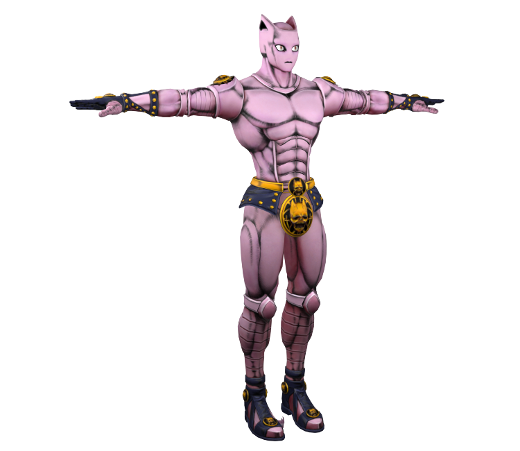

Killer Queen is a powerful Stand with the ability to turn anything it touches into a bomb.
When Killer Queen touches an object, it can detonate it like a bomb, causing massive damage.
This ability allows Yoshikage Kira to eliminate his enemies and cover his tracks effectively.
Additionally, Killer Queen has a secondary ability called "Sheer Heart Attack," which is an autonomous bomb that relentlessly pursues its target until it detonates.

More on Yoshikage Kira the stand user Fandom Page